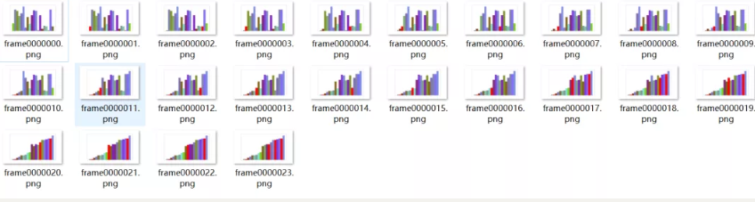

6 堆排序¶
堆排序大大改进了选择排序，逻辑上使用二叉树，先建立一个大根堆，然后根节点与未排序序列的最后一个元素交换，重新对未排序序列建堆。
完整代码如下：
def heap_sort(data_set):
frames = [data_set]
ds = copy.deepcopy(data_set)
def heap_adjust(head, tail):
i = head * 2 + 1 # head的左孩子
while i < tail:
if i + 1 < tail and ds[i].value < ds[i+1].value: # 选择一个更大的孩子
i += 1
if ds[i].value <= ds[head].value:
break
ds[head], ds[i] = ds[i], ds[head]
frames.append(copy.deepcopy(ds))
head = i
i = i * 2 + 1
# 建立一个最大堆，从最后一个父节点开始调整
for i in range(data_count//2-1, -1, -1):
heap_adjust(i, data_count)
for i in range(data_count-1, 0, -1):
ds[i], ds[0] = ds[0], ds[i] # 把最大值放在位置i处
heap_adjust(0, i) # 从0~i-1进行堆调整
frames.append(ds)
return frames
堆排序的性能也比较优秀，完成排序需要51次调整。
